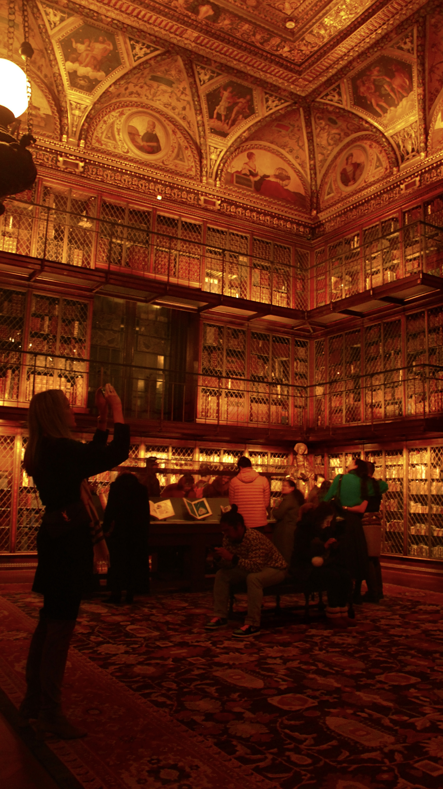
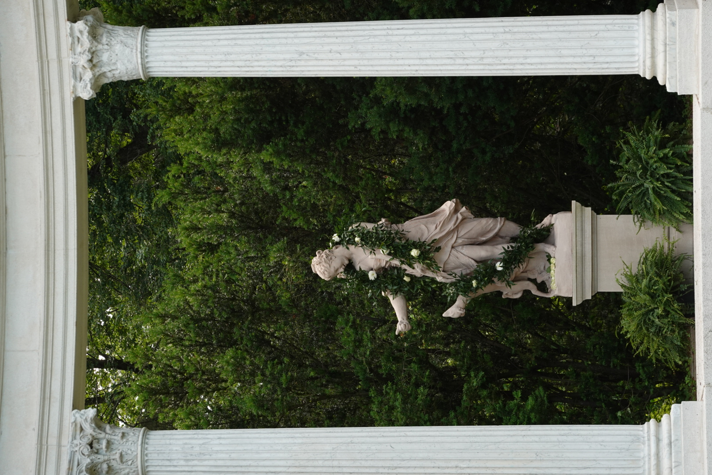
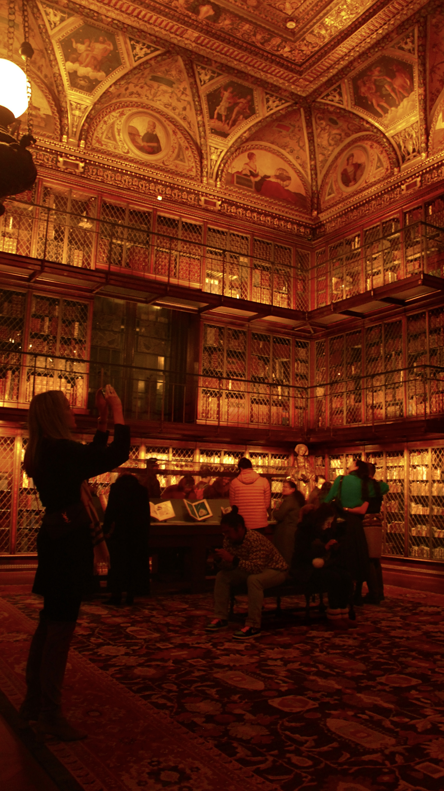
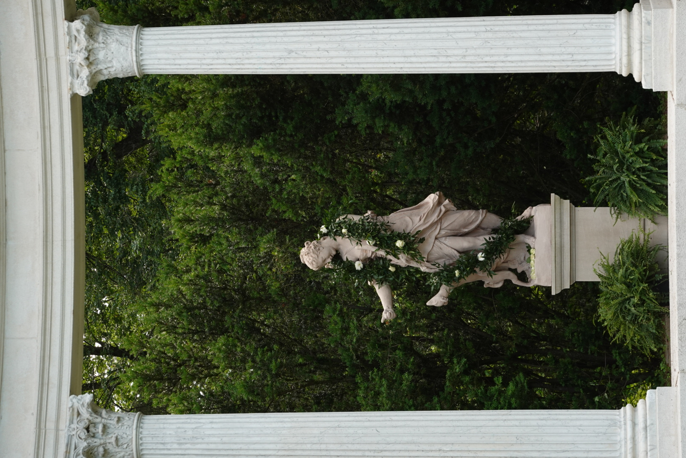
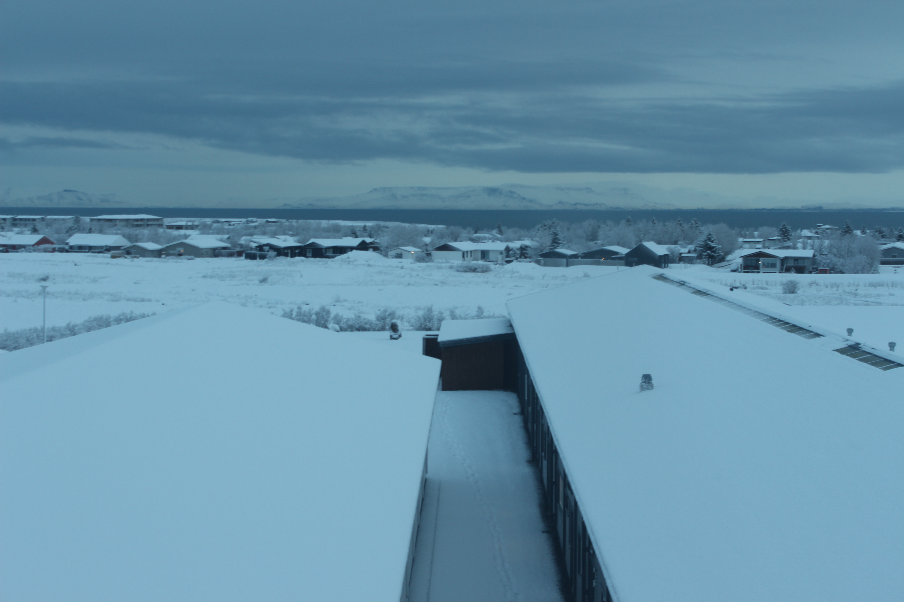
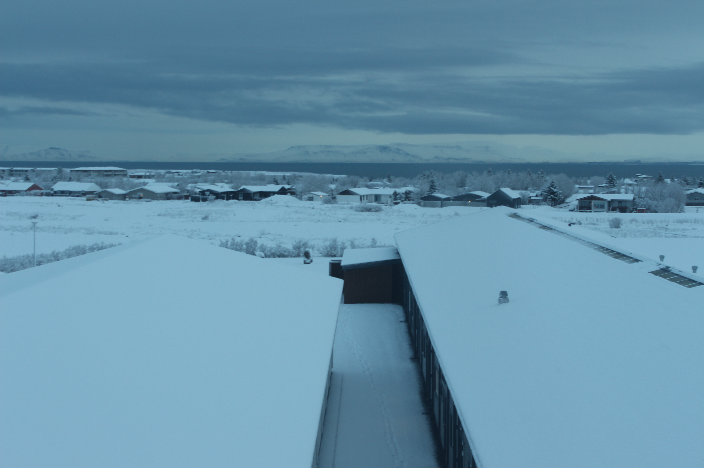

NYC
Hi, here are some of my pictures I have curated over the past few years. The first section includes shots of me exploring different parts of NYC, you can hover over the image to see any details for specific images
 




Bangladesh
The second section includes shots from my Bangladesh trip in the Winter of 2025 visiting after nearly 10 years. I took pictures in the villages of Bangladesh, specifically the Southwestern region of known as Jessore. Along with seeing the riches of Bangladesh in the midst of winter, this trip helped me to step a foot in that door helping people which has only grown my enthusiam to work hard and try to do the same in NYC.
 Bangladesh sun which looks more prominent and redder during winter time
Bangladesh sun which looks more prominent and redder during winter time
 On my very last day in the village I had the privillage of hosting a small get-together for the kids where I was able to cook and distribute sweets to their families. This was one of my biggest highlight of the trip
On my very last day in the village I had the privillage of hosting a small get-together for the kids where I was able to cook and distribute sweets to their families. This was one of my biggest highlight of the trip
 We were able to visit a neighboring village and distribute school supplies for the students. I had the opportunity to talk to one of the organizer of the school and was able to look around and understand how the school system works in those areas
We were able to visit a neighboring village and distribute school supplies for the students. I had the opportunity to talk to one of the organizer of the school and was able to look around and understand how the school system works in those areas

 
On our way back to NYC, we were able to see the beautiful mountains of Iceland by chance, due to our flight stopping there for a few days during a delay

On our way back to NYC, we were able to see the beautiful mountains of Iceland by chance, due to our flight stopping there for a few days during a delay